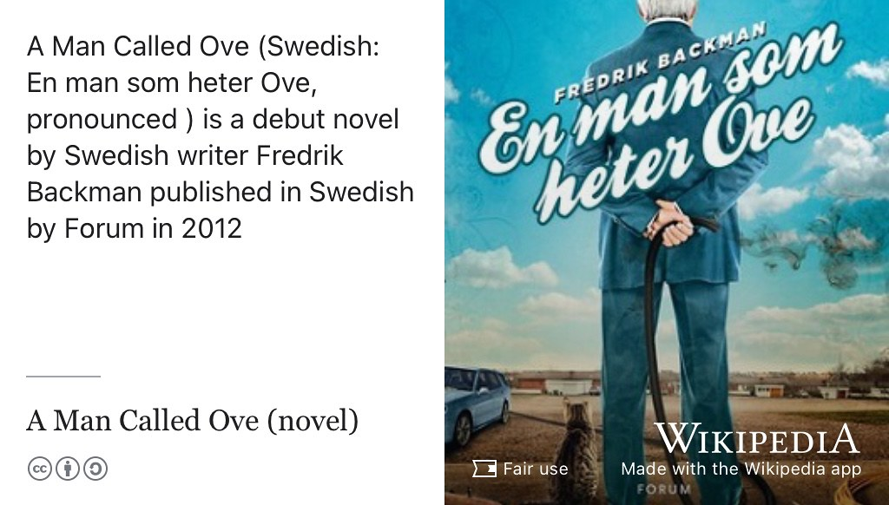
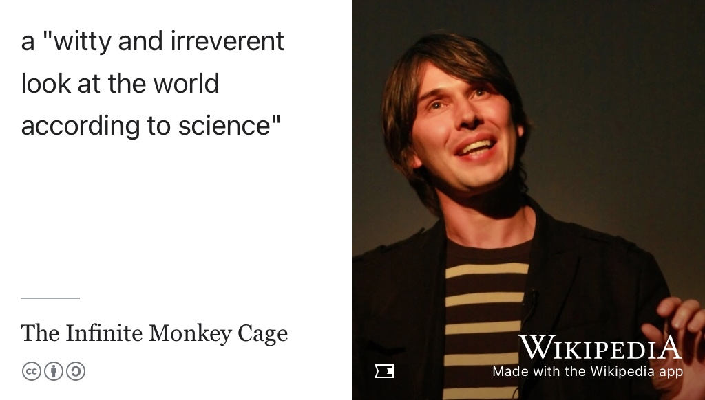
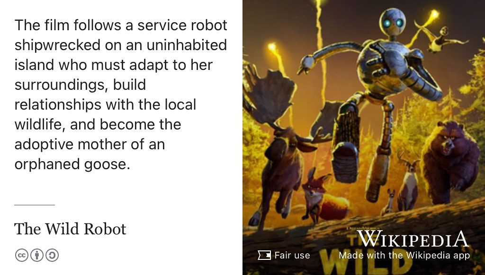
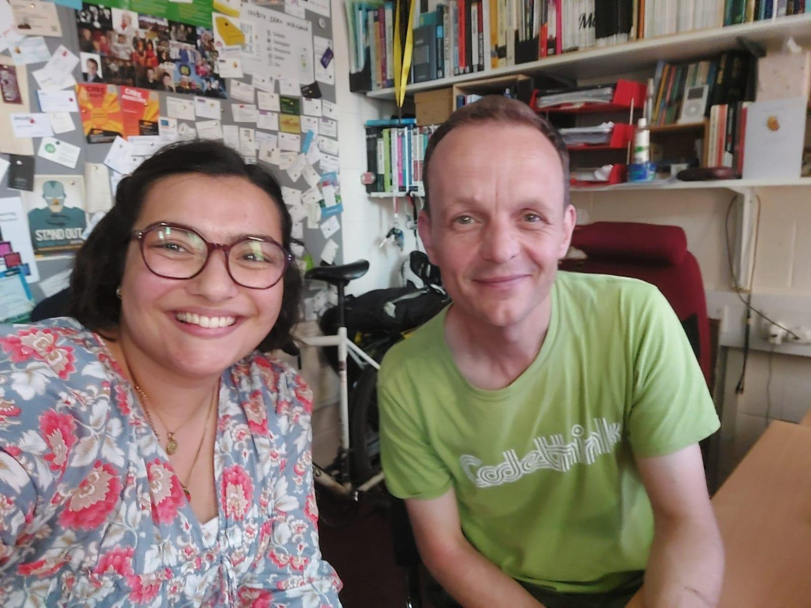

33 Rosie’s Story
Meet Rosie, shown in figure 33.1. Rosie graduated with a Bachelor of Science degree in Computer Science with Industrial Experience in 2025. During her study, she worked at Alexander Hamilton’s bank, the Bank of New York BNY.com in London before accepting a graduate role with BNY in Manchester.
Figure 33.1: Rosie Halsall, portrait re-used from linkedin.com/in/rosiehalsall with permission, thanks Rosie. 🙏
There’s a human summary below of the raw, unedited, machine-generated podcast transcript.
Listen to the episode by clicking Play ▶️ below, or subscribing wherever you get your podcasts, see section 30.2. An annotated and edited transcript of the audio is shown below.
33.1 What’s Your Story Rosie
Some of things we discussed included:
- Women in Computing
- Switching from Physics to Computing
- What she’d do as Vice Chancellor of the University to improve teaching and learning across the University.
- The risks and rewards of studying subjects outside of Computer Science while an undergraduate student
- Wanting to study more ethical issues in technology
- The value of getting involved in Peer Assisted Study Sessions (PASS) www.peersupport.manchester.ac.uk
33.2 One Tune
For her tune, rosie chose Tout l’univers by Gjon’s Tears shown in figure 33.2. (Muharremaj et al. 2021)
Figure 33.2: Tout l’univers, “The Whole Universe”, is a song by Swiss singer Gjon’s Tears released as a single in 2021. (Muharremaj et al. 2021) The song represented Switzerland in the Eurovision Song Contest 2021 in Rotterdam, finishing in 3rd place.
33.3 One Book
For her book, Rosie chose A Man Called Ove by Fredrik Backman, shown in figure 33.3. (Backman 2012)

Figure 33.3: a man called ove is a novel by Swedish author Fredrik Backman, published in 2012. The story revolves around the character Ove, a grumpy yet loveable man who finds his solitary world turned upside down when a lively young family moves in next door. (Backman 2012)
33.4 One Podcast
For her podcast, Rosie chose the Infinite Monkey Cage shown in figure 33.4. (Cox and Ince 2009)

Figure 33.4: The Infinite Monkey Cage is a British comedy podcast hosted by physicist Brian Cox (pictured) and comedian Robin Ince (not pictured). The Independent newspaper described the show as a witty and irreverent look at the world according to science. (Cox and Ince 2009) CC BY 3.0 licensed portrait of Brian Cox by Paul Clarke via Wikimedia Commons w.wiki/TMWP
33.5 One Film
For her film, Rosie chose The Wild Robot, shown in figure 33.5. (Sanders 2024)

Figure 33.5: The Wild Robot is a film about a service robot shipwrecked on an uninhabited island who must adapt to her surroundings, buildg relationships with the local wildlife, and become the mother of an adopted goose. (Sanders 2024)
33.6 Studio Selfie
Rosie took and shared the studio selfie shown in figure 33.6

Figure 33.6: Thanks for the studio selfie by Rosie 🤳
33.7 Audio podcast on YouTube
You can listen to this episode wherever you get your podcasts including Apple, Spotify, Amazon, YouTube and more, see section 30.2 and figure 33.7
Figure 33.7: This episode is available wherever you get your podcasts including Apple, Spotify, Amazon and youtube.com/@coding-your-future/podcasts etc
33.8 Disclaimer
⚠️ Coding Caution ⚠️
Please note these podcast summaries, show notes and transcripts are generated with speech to text software. They are not perfect word-for-word transcriptions. Some speech disfluency may have been manually removed and links, cross references, images and videos may have been added for clarification.